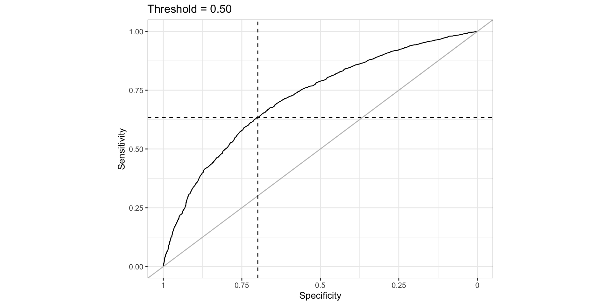
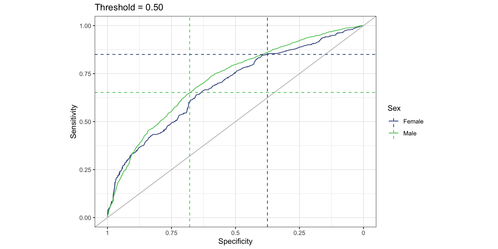

Two_yr_Recidivism Number_of_Priors Age_Above_FourtyFive Age_Below_TwentyFive
4 no -0.6843578 no no
5 yes 2.2668817 no no
7 no -0.6843578 no no
11 no -0.6843578 no no
14 no -0.6843578 no no
24 no -0.6843578 no no
Female Misdemeanor ethnicity probability predicted
4 Male yes Other 0.3151557 0
5 Male no Caucasian 0.8854616 1
7 Female yes Caucasian 0.2552680 0
11 Male no African_American 0.4173908 0
14 Male yes Hispanic 0.3200982 0
24 Male yes Other 0.3151557 0Measuring and Mitigating Disparity of Decision-Making Tools
Ben Brintz
Division of Epidemiology
There is some controversy surrounding the eGFR equation
There is some controversy surrounding the eGFR equation
There is some controversy surrounding the eGFR equation

The NKF and ASN have since recommended removal of race from the equation
- Acknowledged race is a social concept
- i.e., it’s a system to classify individuals rather than reflect biology
- I have heard the biology is more regional than racial
- Does removal of race reduce performance of the decision-making tool?
It depends on how you’re measuring performance
Performance metrics are a trade-off

The developer of a tool can choose to emphasize one metric over another
And the choice of metric could be predictive performance or fairness
Some fairness metrics are more well known than others
\[\begin{align*} \text{Statistical Parity} &= P(\widehat{Y}=1|A=a) \\ &= P(\widehat{Y}=1|A=b) \end{align*}\]
\[\begin{align*} \text{Equalized Odds} &= P(\widehat{Y}=1|A=a,Y=1) \\ &= P(\widehat{Y}=1|A=b,Y=1) \end{align*}\]
\[\begin{align*} \text{Predictive Parity} &= P(Y=1|\widehat{Y}=1,A=a) \\ &= P(Y=1|\widehat{Y}=1,A=b) \end{align*}\]
\[\begin{align*} \text{Balance for the Positive Class} &= E(S|Y=1,A=a) \\ &=E(S|Y=1,A=b) \end{align*}\]
The COMPAS data is a landmark dataset to study algorithmic fairness in recidivism prediction (propietary algorithm)
The COMPAS data is a landmark dataset to study algorithmic fairness in recidivism prediction (propietary algorithm)
If you can code, measuring fairness is easy
a=compas %>% group_by(Female) %>% summarize(`Statistical Parity`=mean(predicted))
b=compas %>% filter(Two_yr_Recidivism=="yes") %>% group_by(Female) %>% summarize(`Equalized Odds`=mean(predicted))
c=compas %>% filter(predicted==1) %>% group_by(Female) %>% summarize('Predictive Parity'=mean(Two_yr_Recidivism=="yes"))
d=compas %>% filter(Two_yr_Recidivism=="yes") %>% group_by(Female) %>% summarize('Balance for the Positive Class'=mean(probability))If you can code, measuring fairness is easy
a=compas %>% group_by(Sex=Female) %>% summarize(`Statistical Parity`=mean(predicted))
b=compas %>% filter(Two_yr_Recidivism=="yes") %>% group_by(Female) %>% summarize(`Equalized Odds`=mean(predicted)) %>% select(-Female)
c=compas %>% filter(predicted==1) %>% group_by(Female) %>% summarize('Predictive Parity'=mean(Two_yr_Recidivism=="yes"))%>% select(-Female)
d=compas %>% filter(Two_yr_Recidivism=="yes") %>% group_by(Female) %>% summarize('Balance for the Positive Class'=mean(probability))%>% select(-Female)
cbind(a,b,c,d) %>% knitr::kable() | Sex | Statistical Parity | Equalized Odds | Predictive Parity | Balance for the Positive Class |
|---|---|---|---|---|
| Male | 0.5069041 | 0.6794658 | 0.6427161 | 0.5902647 |
| Female | 0.2221277 | 0.3753027 | 0.5938697 | 0.4567142 |
But choosing a metric can be complicated

Many sources of bias can cause the disparate impact observed by these metrics
| Data Bias | Definition | Main Cause | Impact on AI |
|---|---|---|---|
| Selection Bias | Certain groups are over/under-represented | Biased data collection process | AI models may not be representative, leading to biased decisions |
| Sampling Bias | Data are not a random sample | Incomplete or biased sampling | Poor generalization to new data, biased predictions |
| Labeling Bias | Errors in data labeling | Annotators’ biases or societal stereotypes | AI models learn and perpetuate biased labels |
| Temporal Bias | Historical societal biases | Outdated data reflecting past biases | AI models may reinforce outdated biases |
| Aggregation Bias | Data combined from multiple sources | Differing biases in individual sources | AI models may produce skewed outcomes due to biased data |
| Historical Bias | Training data reflect past societal biases | Biases inherited from historical societal discrimination | Model may perpetuate historical biases and reinforce inequalities |
| Measurement Bias | Errors or inaccuracies in data collection | Data collection process introduces measurement errors | Model learns from flawed data, leading to inaccurate predictions |
| Confirmation Bias | Focus on specific patterns or attributes | Data collection or algorithmic bias towards specific features | Model may overlook relevant information and reinforce existing biases |
| Proxy Bias | Indirect reliance on sensitive attributes | Use of correlated proxy variables instead of sensitive attributes | Model indirectly relies on sensitive information, leading to biased outcomes |
| Cultural Bias | Data reflect cultural norms and values | Cultural influences in data collection or annotation | Model predictions may be biased for individuals from different cultural backgrounds |
| Under-representation Bias | Certain groups are significantly underrepresented | Low representation of certain groups in the training data | Model performance is poorer for underrepresented groups |
| Homophily Bias | Predictions based on similarity between instances | Tendency of models to make predictions based on similarity | Model may reinforce existing patterns and exacerbate biases |
How can we mitigate the effect of biases on decision making tools?
Pre-Processing
This is done by modifying your training data before model training
One example is using the Disparate Impact Remover

How can we mitigate the effect of biases on decision making tools?
Pre-Processing
This is done by modifying your training data before model training
One example is using the Disparate Impact Remover

How can we mitigate the effect of biases on decision making tools?
Pre-Processing
Other examples include methods such as reweighting or re-sampling.
These methods primarily address bias in the training data but could be used to target certain fairness metrics.
How can we mitigate the effect of biases on decision making tools?
In-Processing
- Adversarial Training trains a classifier and an adversary model in parallel
- Classifier is trained to predict the task at hand
- Adversary is trained to exploit a bias.
- When trained against one another, one can develop a fair model that is simultaneously a strong classifier. \[L = L_{\text{task}} - \lambda L_{\text{adv}}\]
How can we mitigate the effect of biases on decision making tools?
Post-Processing
Threshold Optimization for Equalized Odds \[\begin{align*} P(\widehat{Y}=1|A=a,Y=1) = P(\widehat{Y}=1|A=b,Y=1) \end{align*}\]

How can we mitigate the effect of biases on decision making tools?
Post-Processing
Threshold Optimization for Equalized Odds \[\begin{align*} P(\widehat{Y}=1|A=a,Y=1) = P(\widehat{Y}=1|A=b,Y=1) \end{align*}\]

How can we mitigate the effect of biases on decision making tools?
Post-Processing
Threshold Optimization for Equalized Odds \[\begin{align*} P(\widehat{Y}=1|A=a,Y=1) = P(\widehat{Y}=1|A=b,Y=1) \end{align*}\]
How can we mitigate the effect of biases on decision making tools?
Post-Processing
And other approaches:
- Calibration Post-Processing
- Reject Option Classification (abstain in high fairness concern cases)
- Equalized Odds Post-Processing (Adjust model predictions to ensure EO)
How can we mitigate the effect of biases on decision making tools?
Regularization-Based
- Tries to minimize the negative log likelihood of the model
- But also includes a penalty enforcing a concept of fairness
How can we mitigate the effect of biases on decision making tools?
Regularization-Based
- Tries to minimize the negative log likelihood of the model
- But also includes a penalty enforcing a concept of fairness
E.g. take a logistic regression model and add a penalty term
log_likelihood <- function(beta, X, Y,A,lam1=1) {
logit <- as.matrix(X) %*% beta
p <- plogis(logit)
pA1=p[which(A=="F" & Y==1)] # probability of being positive given A="F"
pA0=p[which(A=="M" & Y==1)] # probability of being positive given A="M"
pen1=abs(mean(pA1)-mean(pA0)) # How different are the probabilities on average?
logLL=-(sum(Y * log(p) + (1 - Y) * log(1 - p))) # Add the penalty term
logLL + lam1*log(pen1)
}Questions?